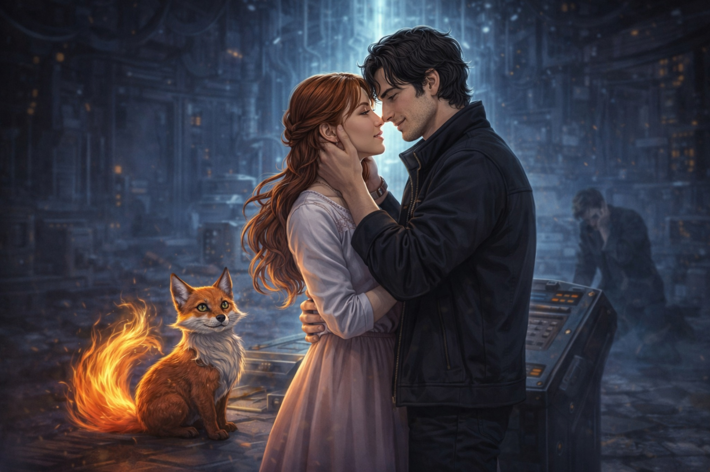

Башня, город и волны
Образ, в котором соединяются любовь, опасность и надежда.
Раздел только на русском: короткие портреты героев и атмосферы истории.
Образ, в котором соединяются любовь, опасность и надежда.

Момент, когда нежность оказывается сильнее разрушения.
Нежная, глубокая и светлая героиня. В ней соединяются мягкость, внутренняя сила и способность видеть истину сердцем.
Искренний герой, который любит внимательно и преданно. Он умеет ждать, защищать и говорить о чувствах даже тогда, когда вокруг хаос.
Магический спутник и проводник. Он соединяет рисунок, память, чудо и путь к спасению города.
Тот, кто хотел раскрыть правду слишком жестоко. Через него история показывает, что истина без любви может стать разрушительной.
Живой и почти чувствующий персонаж. Он страдает, тревожится и потом возвращается к свету вместе с героями.
Символ испытания, высоты и предельного выбора. Именно там любовь проходит через тьму и становится ещё яснее.